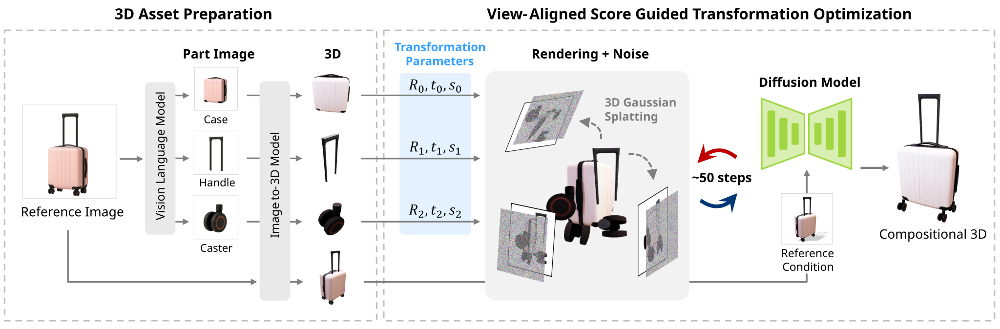
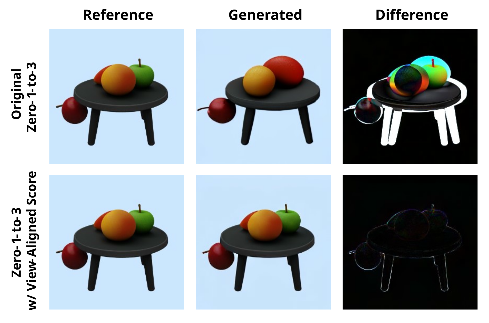
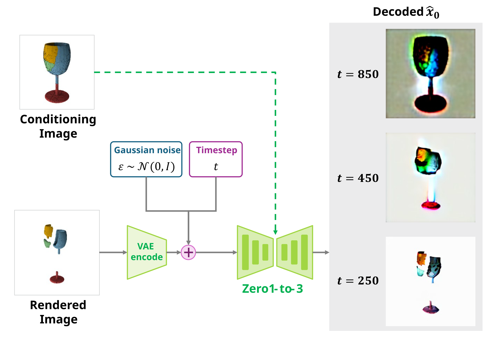
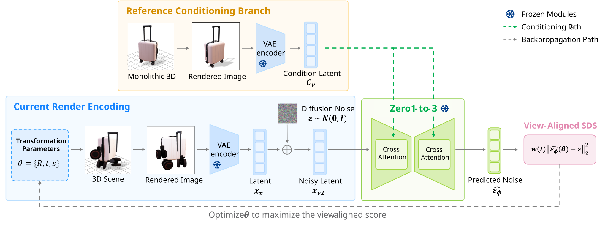
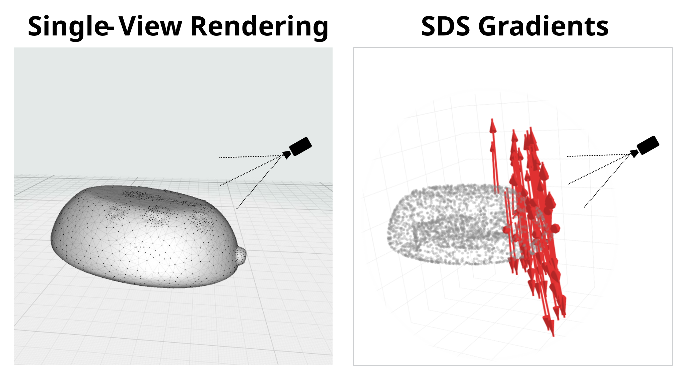
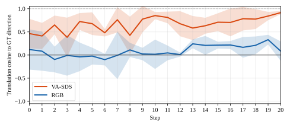
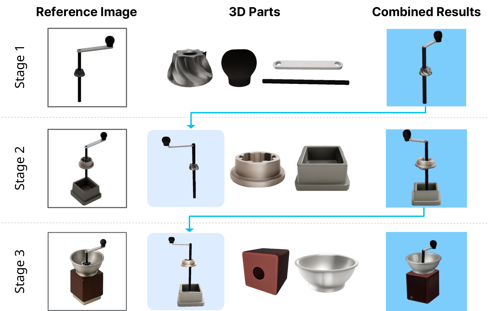

Research project · Preprint
VA-Assembly: View-Aligned Score Guidance for Training-Free 3D Part Assembly
International Journal of Computer Vision · Under review (submitted June 2026)
Abstract
Image-to-3D models can reconstruct an object from a single image, but typically produce a monolithic representation. Editing, replacing, or reconfiguring individual components requires explicit part-level structure. Existing part-aware generation and learning-based assembly methods often depend on part-level supervision, category-specific priors, or paired part-layout training data.
We consider independently prepared or generated 3D parts with no predefined inter-part relationships, shared coordinate frames, or consistent scales. The challenge is to assemble these parts into a reference-consistent object while preserving each component as a separate, editable asset.
We introduce VA-Assembly, a training-free framework that optimizes part translation, rotation, and scale from a single reference image. Its core is view-aligned score guidance: a frozen diffusion model is conditioned on same-view renderings of a reference-derived 3D representation, providing structural guidance under large initial misalignment. Only part transformations are updated; the input geometries remain fixed and explicitly separable. The framework requires no annotated part layouts or category-specific assembly training, and supports downstream component-level editing, replacement, and reconfiguration.
Overview
VA-Assembly estimates the translation, rotation, and scale of independently prepared 3D parts from a single reference image. The parts have no predefined inter-part layout, shared coordinate frame, or consistent scale. Their geometries remain fixed and explicitly separable throughout optimization.

Core method
View-Aligned Score Guidance
Transformation-level supervision from a pretrained view-conditioned diffusion prior.
The key idea is to condition a frozen view-conditioned diffusion model on same-view renderings of a reference-derived monolithic 3D representation. The conditioning signal and the current part configuration share the same camera viewpoint, yielding geometrically aligned score gradients for part translation, rotation, and scale.
Diffusion Score Guidance and Target-View Conditioning
Original Zero-1-to-3 predicts a target view from a fixed source image and a relative camera pose. VA-Assembly instead uses a target-view rendering of the monolithic reference as the condition. This anchors the score to view-specific silhouette, part proportions, and inter-part layout.


Higher-noise scores induce broader layout and silhouette corrections, while lower-noise scores retain local boundary information. This supports using SDS as early-stage global structural guidance.
View-Aligned SDS Objective
The current composition is rendered, encoded, and perturbed with Gaussian noise. The frozen diffusion model predicts the noise under the same-view reference condition. The resulting score gradients are backpropagated through differentiable rendering to update only the part transformation parameters.

The relative camera transformation condition is set to the identity view change: each score is evaluated against a same-view reference, rather than a novel-view prediction from a fixed source image.
Multi-View Score Aggregation
Single-view SDS can produce projection-biased gradients. VA-Assembly aggregates view-aligned scores across 12 randomly sampled viewpoints per iteration, providing complementary silhouette, depth, and occlusion constraints for 3D transformation optimization.

Late-Stage Geometric and Photometric Refinement
View-aligned SDS drives coarse global arrangement for the first 40 iterations. Visibility-filtered Chamfer distance and RGB consistency are activated during the final 10 iterations to refine visible-surface alignment and appearance consistency.
Results
Comparison with 3D Part Arrangement Methods
The transformation benchmark contains 80 target compositions using GSO and Breaking Bad assets, with substantial initial translation, rotation, and scale perturbations.

Go-ICP does not estimate scale and REPARO does not estimate rotation. Quantitative comparisons therefore use each baseline’s supported transformation components.
| Optimization parameters | Method | Chamf. [NCS] ↓ | Trans. [NCS] ↓ | Rot. [deg] ↓ | Scale ↓ | ||||
|---|---|---|---|---|---|---|---|---|---|
| Mean | SD | Mean | SD | Mean | SD | Mean | SD | ||
| Translation, Rotation |
Go-ICP | 0.181 | 0.179 | 0.269 | 0.280 | 44.61 | 28.324 | – | – |
| Assembler | 0.037 | 0.004 | 0.049 | 0.001 | 61.038 | 25.156 | – | – | |
| Ours | 0.019 | 0.007 | 0.051 | 0.013 | 14.061 | 37.415 | – | – | |
| Translation, Scale |
REPARO | 0.257 | 0.077 | 0.406 | 0.093 | – | – | 0.150 | 0.034 |
| Ours | 0.017 | 0.009 | 0.039 | 0.021 | – | – | 0.005 | 0.001 | |
| Translation, Rotation, Scale |
TEASER++ | 0.063 | 0.027 | 0.074 | 0.063 | 50.843 | 68.169 | 0.017 | 0.022 |
| Ours | 0.021 | 0.007 | 0.042 | 0.023 | 18.015 | 42.524 | 0.019 | 0.020 | |
Ours denotes VA-Assembly. Mean and SD are reported separately; lower is better. NCS denotes normalized coordinates. A dash indicates a transformation component not optimized in that protocol. Table 2 in the paper ↗
Comparison with Part-Aware 3D Generation Methods
VA-Assembly preserves explicit part organization and direct component-level editability. Assembled and exploded views compare the final part-aware outputs with Part123 and OmniPart; these are generation baselines, not direct part transformation optimization baselines.

Ablation Studies
Under global initialization, view-aligned SDS produces translation updates more closely aligned with the ground-truth direction than RGB supervision. A cosine similarity closer to 1 indicates better alignment with the correct update direction.

The guidance ablation further isolates the benefit of aligning the conditioning view with the rendered optimization view. View-aligned conditioning provides more reliable transformation gradients than single-view or conventional multi-view Zero-1-to-3 guidance. Read the ablation study ↗
Applications
Hierarchical 3D Part Assembly for Product Design
Lower-level parts are first arranged using a sub-assembly reference. The optimized sub-assembly is then treated as a higher-level component, preserving the relative transformations of its constituent parts. This supports structures that are not fully observable in a single exterior reference image.

The method targets reference-consistent arrangement of fixed, separable parts. Stronger contact reasoning, collision handling, and physically constrained multi-part assembly remain future directions.
Figures and results from VA-Assembly · arXiv:2611.20788v1 ↗